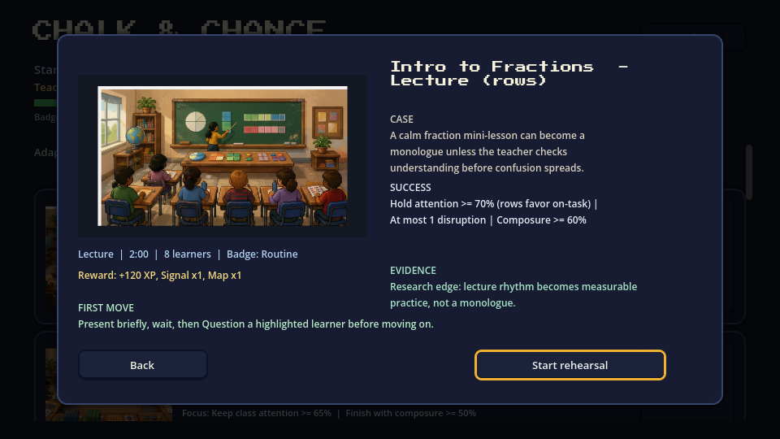
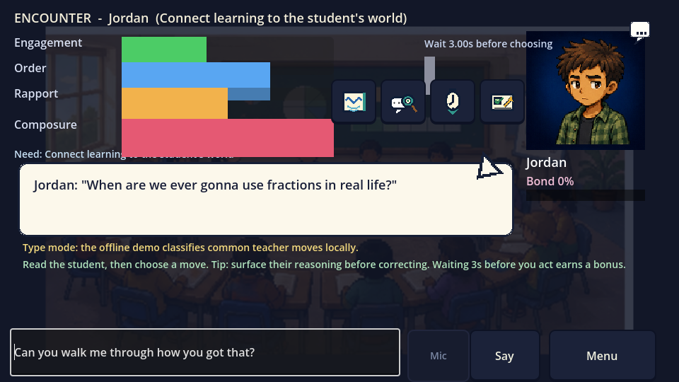
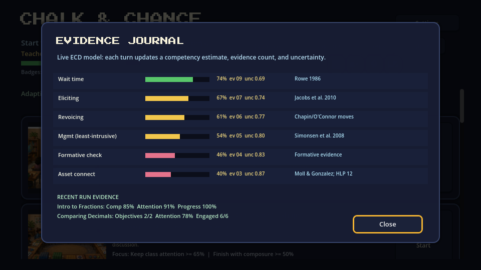
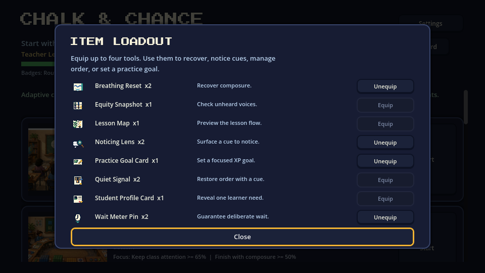
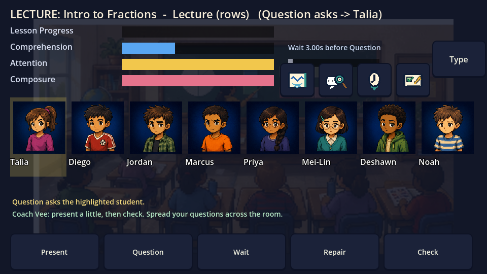
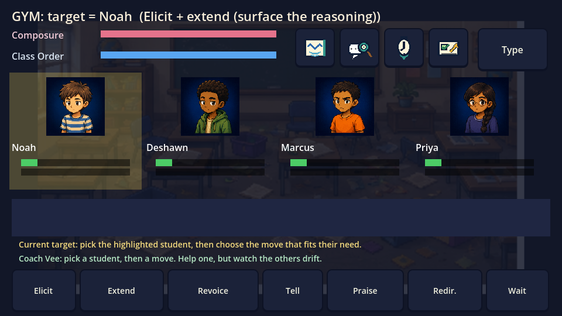
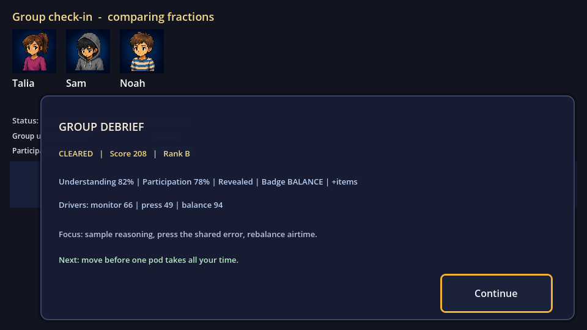

Current build
Not a chat demo. A rehearsal loop.
The game now includes mission briefing, scenario backdrops, explicit debrief panels, level-up progression, item loadout, local leaderboard, evidence journal, lesson import, and product QA gates.
Mission briefing
Each mission opens with art, story hook, success conditions, reward, evidence edge, and first-move guidance.
Classroom orchestration
Players manage attention, order, composure, proximity, interruptions, and student-specific needs.
Evidence Journal
Live ECD/Elo-style competency estimates show probability, evidence count, uncertainty, and research anchors.
Progression loop
Badges unlock missions, XP grants upgrade points, item rewards change loadout, and runs post to a leaderboard.
Readable debriefs
Encounter, lecture, gym, group, and full-lesson endings show score drivers, next focus, rewards, and replay choices.
Free-text teacher talk
Players can type their own teacher move; the game maps it to the same evidence-bearing action loop.
Lesson import
Paste a lesson plan and generate a playable scenario with objectives, roster, seating, and dialogue hooks.
Screenshots
Latest product surfaces










Player onboarding
Guidebook and narrated walkthrough
Use the guidebook for first-time players, instructors, or reviewers. It explains how the game maps observation, decision, feedback, and reflection into a playable loop.
Research-grounded mechanics
Mechanics trace to teaching constructs
Chalk & Chance is designed as an educational game, so mechanics are tied to constructs and telemetry instead of only to narrative choices.
| In game | Construct | Anchor |
|---|---|---|
| Wait-time meter | Productive pause after prompting | Rowe 1986 |
| Elicit / Extend / Revoice | Student reasoning and discourse moves | Jacobs, Lamb & Philipp 2010; Chapin/O'Connor |
| Least-intrusive redirect | Behavior management without escalation | Simonsen et al. 2008 |
| Asset connect | Funds-of-knowledge connection | Moll & Gonzalez; TeachingWorks HLP 12 |
| Group monitoring | Withitness and monitoring | Kounin classroom monitoring |
| Formative check | Check for understanding | Black & Wiliam 1998 |
| Status treatment | Equitable participation in group work | Cohen & Lotan complex instruction |
Productization QA
Verified as a playable product surface, not only a prototype
The repository includes a one-command QA runner that refreshes screenshots and checks the main product gates.